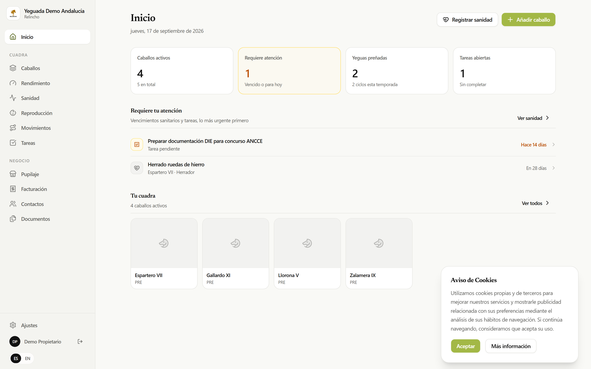
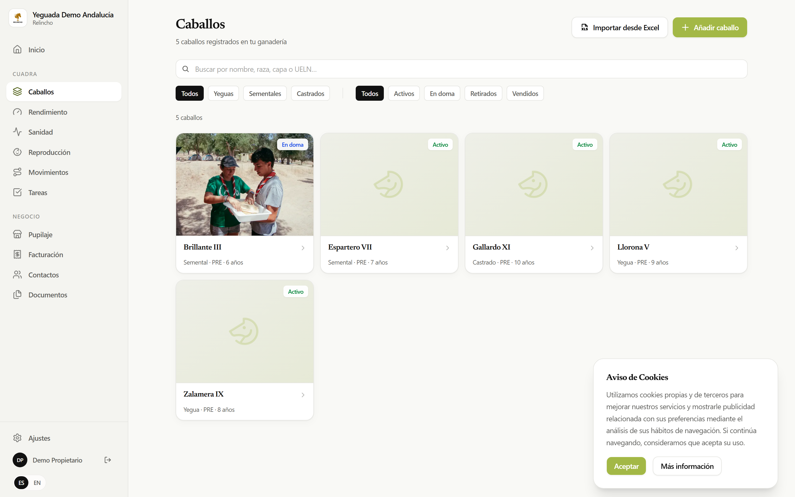
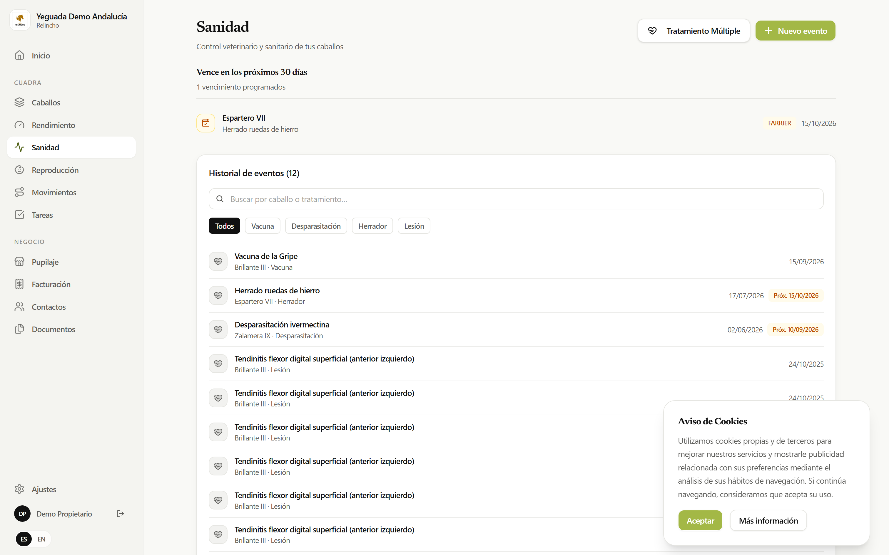
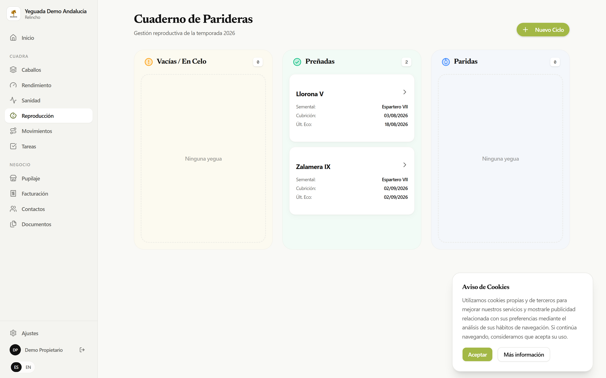
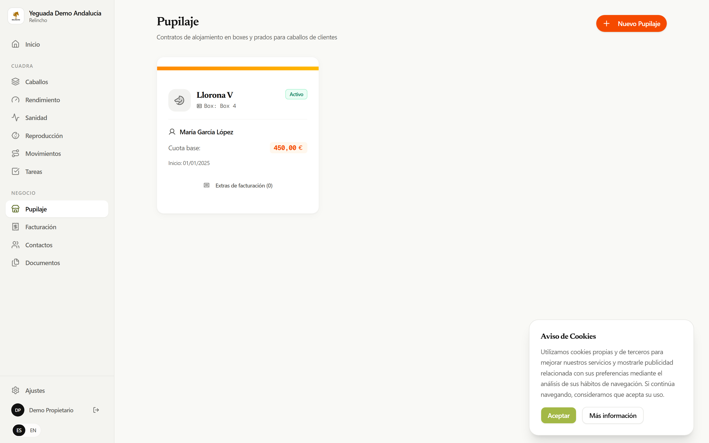
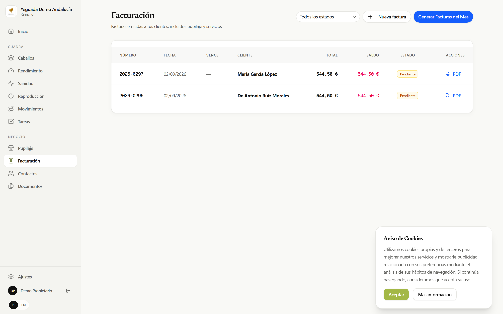
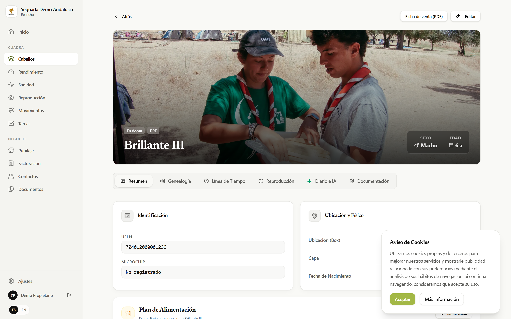
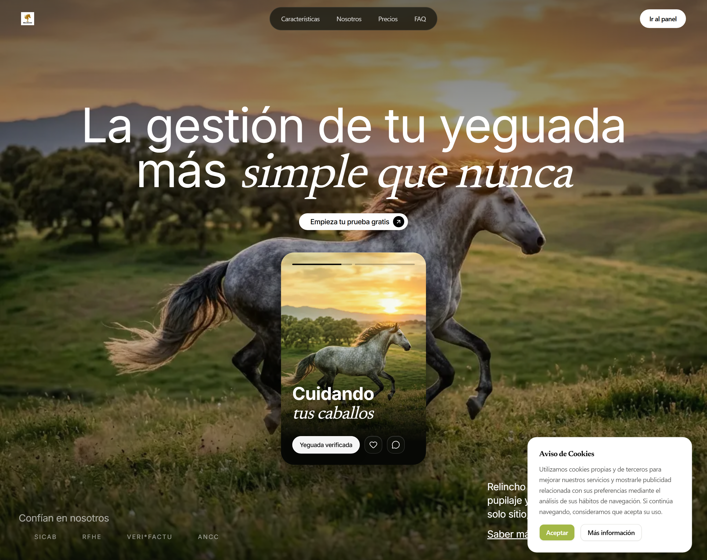

Pack de prensa — Relincho
8 capturas retina (3024×1890 px) listas para adjuntar. El ZIP final es public/prensa/pack-prensa-relincho.zip

01 · Inicio — panel de resumen de la yeguada demo

02 · Caballos — listado de la cuadra

03 · Sanidad — vacunas, tratamientos y recordatorios

04 · Reproducción — celos, cubriciones y gestaciones

05 · Pupilaje — boxes, estancias y tarifas

06 · Facturación — facturas con Veri*Factu

07 · Ficha del caballo — historial completo

08 · Web pública — relincho.vercel.app